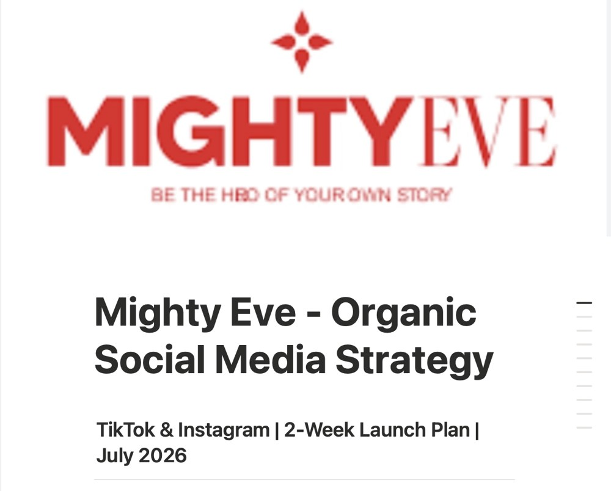

My Work
Bringing brands
to life online.
Every project is different. Take a look at how I've helped businesses build their online presence through thoughtful strategy, engaging content and creative storytelling.
Isobel Perl
Providing ongoing social media management for Isobel Perl, with a focus on creating a consistent, engaging and elevated online presence across multiple channels. From content strategy, planning and filming to editing, publishing, community management, paid ad creation, OOH campaigns and performance analysis, I work closely with the brand to ensure every piece of content aligns with its identity and business goals.
By combining creative storytelling with a strategic approach, we're building a social presence that not only showcases the brand but strengthens audience engagement, increases visibility and supports long-term growth.

Mighty Eve
A tailored social media strategy designed to increase brand awareness, conversion and build a stronger connection with Mighty Eve's target audience. Through audience research, content planning and platform-specific recommendations, this strategy provides a clear roadmap for consistent, impactful growth.
Currently being implemented - I'm excited to see the strategy come to life and the results it delivers.
The White Rooms
Providing social media management for The White Rooms across TikTok and Instagram. From content planning and publishing to maintaining a consistent brand presence, my support is tailored to the business's goals and delivered in a flexible and collaborative way.
CFAB & Clara
Produced UGC-style TikTok content for CFAB and Clara, creating authentic, trend-led videos that resonated with their target audiences. Each piece of content was designed to feel organic to the platform while showcasing the brands in a creative, natural and engaging way.